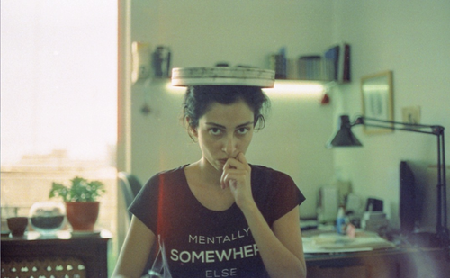

Bio
Close ×
Sadaf Sadri makes work that explores worldbuilding that prompts reflection on gender, ideology, power, and relationality using digital technologies. In this exploration, they are inspired by Islamic institutions of patterns, Shia iconography, and occult sciences.
Sadaf is particularly interested in how art can imagine new modes of collectivity within virtual space. In 2022, they founded the SPAM New Media Festival, a platform for experimental practices in digital arts. Sadaf holds a PhD from the Center of Digital Arts and Experimental Media (DXARTS) at the University of Washington.